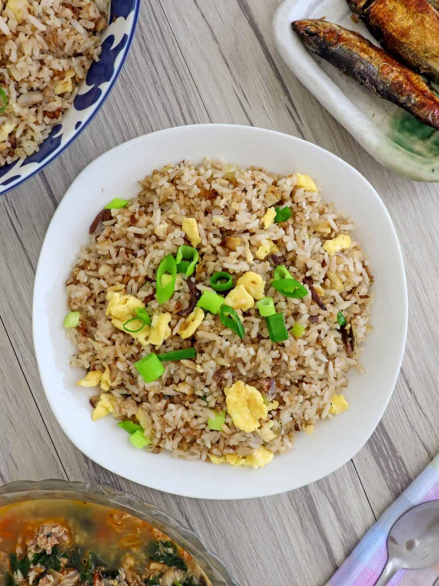

HOME
Tuna Fried Rice

Description
Tuna fried rice is a quick and flavorful dish made by stir-frying cooked rice with canned tuna, vegetables, and seasonings. This dish combines the savory taste of tuna with the rich umami flavors of soy sauce, garlic, and onions. Often enhanced with eggs, chili flakes, or sesame oil, tuna fried rice is a nutritious and satisfying meal that can be prepared in just a few minutes. It’s perfect for a quick lunch or dinner, offering a balance of protein, carbs, and essential nutrients. Serve it hot with a sprinkle of green onions or a dash of lime for extra freshness.
Ingredients
- 2 cups day old rice
- 1 small onion, diced
- 1 garlic clove, minced
- 1 can (180-200 grams) tuna, in brine, drained
- ¼ cup frozen peas
- ¼ cup canned corn
- 1 carrot, diced (around 1/3 cup)
- Cooking oil of choice (I used coconut oil)
- Toyomansi, or lemon juice and soy sauce
- Salt and Pepper
Directions
- Moisten the day-old rice with a tablespoon or two of water. Separate the grains with your fingers.
- In a large frying pan, heat around 1 tablespoon of oil over medium heat. Add the onion and garlic and sauté until the onion is soft and the garlic is light brown.
- Add the carrots and cook until the carrots are cooked to your liking. Season with a pinch of salt and pepper.
- Add the tuna and fry for a couple of minutes. Add more oil if needed. Season with a squeeze of lemon, if desired, and some salt and pepper.
- Add the rice, peas and corn. Mix well. Season with 2 tablespoons of toyomansi, (2 teaspoons lemon juice and 4 teaspoons soy sauce), salt and pepper. Mix well. Fry for at least 5 minutes, to crisp up the rice.
- Top with green onions, if using.
- Serve.